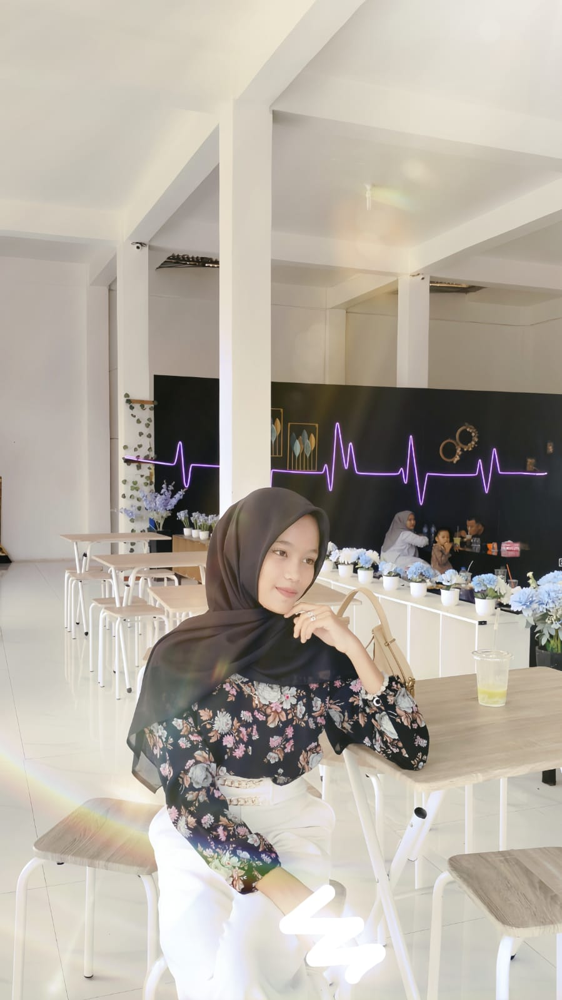

Thallita Syafa Harahap
Jurusan TKJ (Teknik Komputer dan Jaringan)
Jl. Halmahera, Ujung Gading, Lembah Malintang, Pasaman Barat, Sumatera Barat 26572
RINGKASAN
Nama saya Thallita Syafa Harahap, biasa dipanggil Thallita. Saya telah menempuh pendidikan dasar di SD N 11 Lembah Melintang (2017–2022) dan pendidikan menengah pertama di SMP N 1 Lembah Melintang (2022–2025). Saat ini, saya sedang menempuh pendidikan di SMK N 1 Lembah Melintang, jurusan Teknik Komputer dan Jaringan (TKJ). Sekolah ini merupakan satu-satunya SMK unggulan di wilayah Ujung Gading, yang dikenal memiliki kualitas pengajaran, pembelajaran, dan praktik kejuruan yang baik, serta menawarkan enam program keahlian. Saya tinggal di Jalan Halmahera, Ujung Gading, Lembah Malintang, Kabupaten Pasaman Barat, Sumatera Barat 26572.